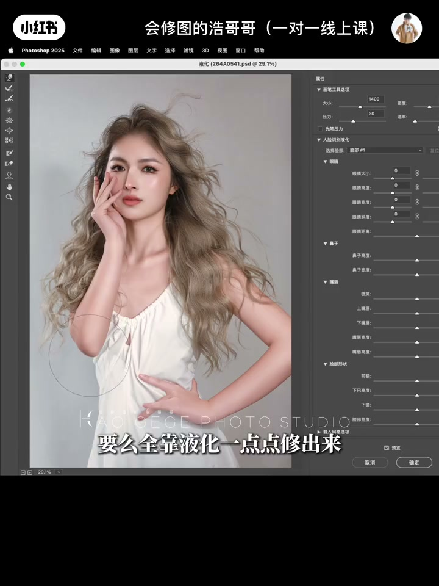
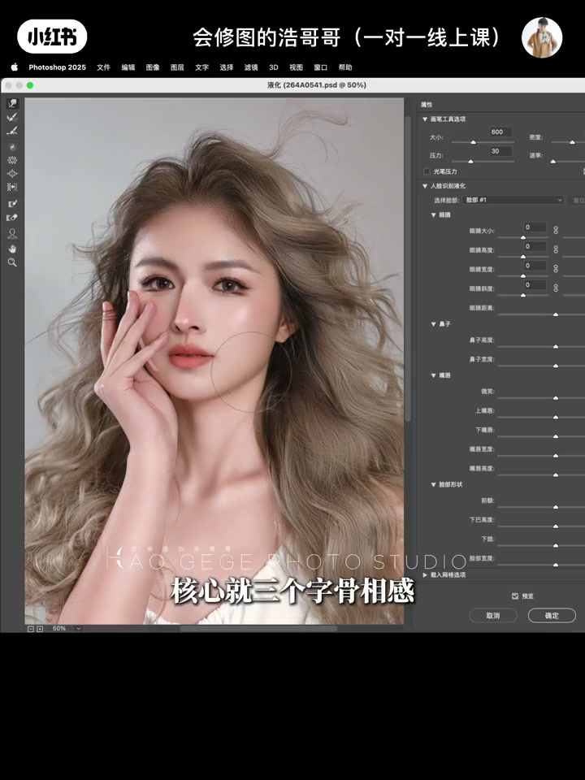
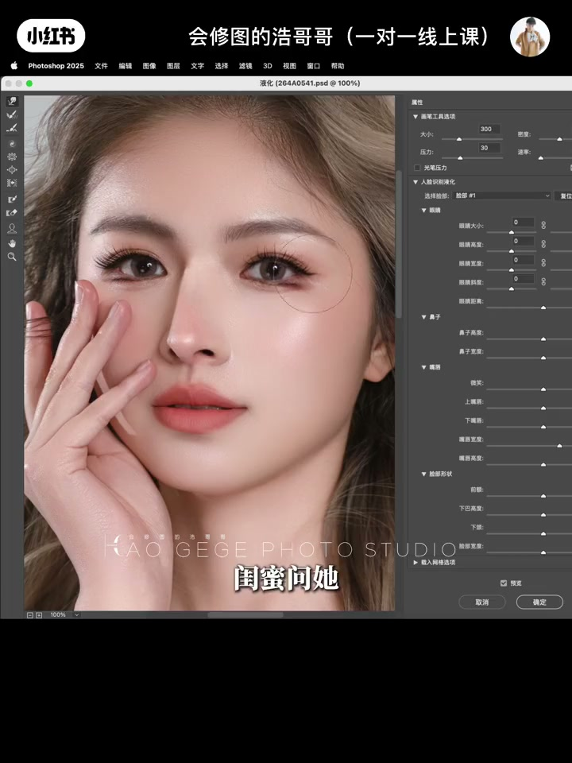
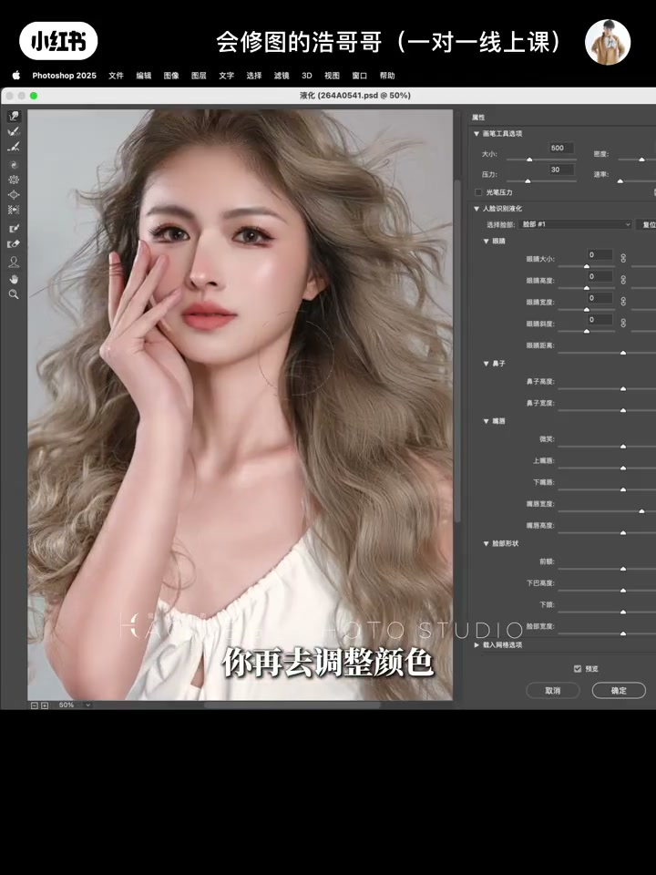

内容要点
修图师浩哥哥用一个反常识的判断开场：人像高不高级，主要看液化，比调色影响大得多。他解释为什么收藏几百个磨皮调色教程还是修不出高级感——因为调色只是摆盘，液化才是雕刻骨像的刻刀；调色套个预设就能出效果，而液化靠的是骨像和肌肉审美，分寸差一点整张图气质全垮。核心就三个字：骨像感。他用一个真实案例示范（只微调收颧骨、顺下颌、调整颈部肌肉，就保留辨识度地改变气质），并给出正确的修图顺序：先整体后局部，先看轮廓再看色调，五官不要轻易改动。
知识结构
人像高不高级主要看液化，比调色影响大得多；收藏几百个磨皮调色教程，照片还是不够高级。
调色只是摆盘，液化才是雕刻骨像的刻刀；调色门槛低套预设就出效果，液化靠骨像和肌肉审美，分寸差一点气质全垮。
液化最怕的不是推多，是不知道哪里该收；真实案例：收颧骨、顺下颌、调颈部肌肉，微调三处保留辨识度。
先整体后局部：先观察整体比例找别扭处，理顺后再调颜色；五官尽量不动。
调色改表面光影，液化动底层骨像；真正的高手知道什么时候该推、什么时候该收手。
照片高级感的核心在轮廓骨像而不是调色参数。液化不是逢图就推、强行换头，而是带着骨相感审美「知道哪里该收」：先整体后局部，只动该动的地方并保留本人辨识度。调色改的是表面光影，液化动的是底层骨像。
00:00-00:24开场：比调色影响大得多的，是液化
视频用一句判断开场：「液化才是决定人像高级感的关键，比调色影响大得多。人像修图 16 年，说个圈里很少公开的真相——人像高不高级，主要看液化。」
UP 主接着戳破一个普遍困境：「你是不是也这样？磨皮、调色教程收藏几百个，结果照片修出来还是不够高级，客户还是说假。都说人像三要素是人好看，但真正耐看的氛围感大片，要么模特底子好，要么全靠液化一点点修出来。」

00:24-00:48为什么：调色是摆盘，液化是刻刀
为什么液化比调色重要？UP 主给出两句话：「因为调色只是摆盘，液化才是雕刻骨像的刻刀。」
他进一步解释：「网上刷到好看的照片，大家第一反应是问相机、问调色参数，几乎没人关心液化。但你有没有想过，为什么你套了同样的预设，照片还是差点意思？因为调色门槛低，套个预设就能出效果，教程预设一抓一大把；液化不一样，它靠的是骨像和肌肉审美，分寸差一点，整张图气质全垮掉。」最后补一句意味深长的话：「这行不缺技术好的，缺的是懂人心的。你要做的不是证明自己的技术有多牛，而是懂得它有多美。」

00:48-01:23核心三字：骨像感，以及一个真实案例
「液化最怕的不是推多，是不知道哪里该收。核心就三个字：骨像感。」UP 主用一个客户案例说明：「原片颧骨高、下颏线模糊，问我只靠调色能不能救。我说不行，问题在骨像。我只微调三处——收颧骨、顺下颌、调整颈部肌肉。」
他强调改动要小：「改动很小，保留它本人辨识度，没有假面感，气质直接变了。他发朋友圈，闺蜜问他是不是偷偷去做了轮廓，但又说不上来哪里变了。」随后量化：「很多图如果只调色，顶多从 60 分到 70 分；液化一改，直接拉到 90 分。」

01:23-02:14正确顺序与收尾：先整体后局部，知道何时收手
「所以我看片习惯先看轮廓，再看色调。具体怎么看？拿到一张图先观察整体比例，找出画面里哪些一眼看着就别扭、难以接受的问题，比如高发际线、突兀的颧骨这类。记住，先整体后局部，五官尽量不要轻易改动。把这些理顺之后，你再去调整颜色，就会明显感觉修图效果完全不一样。」
收尾回到主题：「调色改的是表面光影，液化动的是底层骨像。别死磕调色预设，照片高级的核心是轮廓骨像。液化不等于逢图就推、强行换头，真正的高手知道什么时候该推、什么时候该收手。」最后 UP 主以「把自己放低，把客户抬高，你才能真正被记住」作结。

完整转录（85段）
以下文本由 Whisper medium 模型自动转录，可能存在少量识别误差，已尽可能修正。
液化才是决定人像高级感的关键
比调色影响大得多
人像修图16年
说个圈里很少公开的真相
人像高不高级 主要看液化
你是不是也这样
膜皮 调色教程 收藏几百个
结果照片修出来还是不够高级
客户还是说假
都说人像三要素是人好看
但真正耐看的氛围感大片
要么模特底子好
要么全靠液化一点点修出来
因为调色只是摆盘
液化才是雕刻骨像的刻刀
你发现没
网上刷的好看的照片
大家第一反应是问相机 问调色参数
几乎没人关心液化
但你有没有想过
为什么你套了同样的预设
照片还是差点意思
因为调色门槛低
套个预设就能出效果
网上教程预设一抓一大把
液化不一样
它靠的是骨像和肌肉审美
分寸差一点 整张图气质全垮掉
这行不缺技术好的
缺的是懂人心的
你要做的不是证明自己的技术有多牛
而是懂得它有多美
液化最怕的不是推多
是不知道哪里该收
核心就三个字
骨像感
我之前遇到一个客户
原片拳骨高 下颗线模糊
问我只靠调色能不能救
我说不行 问题在骨像
我只微调三处
收拳骨 顺下颌 调整颈部肌肉
改动很小
保留它本人辨识度
没有假面感
气质直接变了
他发朋友圈
闺蜜问他
你是不是偷偷去做了轮廓
但又说不上来哪里变了
很多图如果只调色
顶多从60分到70分
液化一改 直接拉到90分
所以我看片习惯先看轮廓
再看色调
具体怎么看
拿到一张图先观察整体比例
找出画面里哪些一眼看着就别扭
难以接受的问题
比如高发际线
突兀的拳骨这类
记住 先整体后局部
五官尽量不要轻易改动
把这些理顺之后
你再去调整颜色
就会明显感觉修图出来的效果完全不一样
调色改的是表面光影
液化动的是底层骨像
别死磕调色预设
照片高级的核心是轮廓骨像
液化不等于逢图就推 强行换头
真正的高手知道什么时候该推
什么时候该收手
把自己放低
把客户抬高
你才能真正被记住
我是会修图的浩哥哥
专注简单好懂
普通人也能学会的修图底层逻辑
持续分享
咱们一起把照片越修越好看
你现在液化最拿不准哪个部位
评论区发图抠液化
我抽空给大家回最高点赞问题
拜